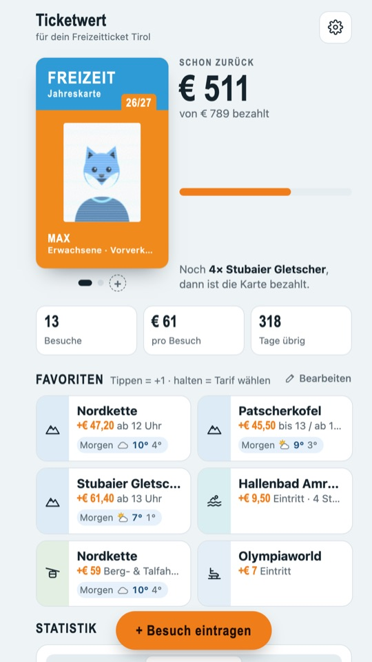
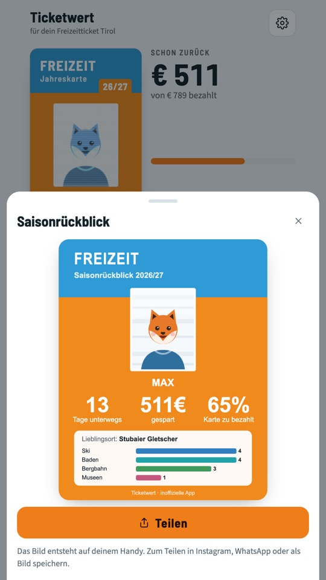
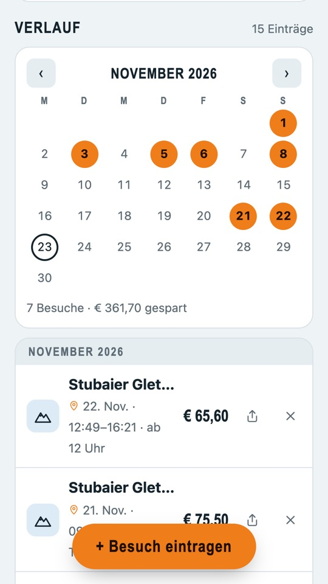
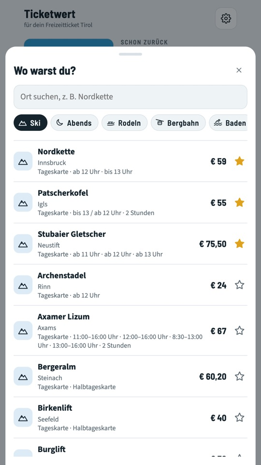

Ticketwert
Jahreskarten-Rechner für Tirol · Support
Im App Store laden Lohnt sich das Freizeitticket? Zum Rechner
Ticketwert zeigt, wie viel sich deine Jahres- oder Saisonkarte schon gelohnt hat. Du trägst Skitage, Bergbahnen, Bäder und Museen mit einem Tipp ein, die App rechnet mit den aktuellen Kassenpreisen. Funktioniert für das Freizeitticket Tirol, die Snow Card Tirol und auch ganz ohne Karte. Keine Werbung, kein Konto, alles bleibt auf deinem Handy.




Kontakt
Fragen, Fehler oder ein Preis, der nicht stimmt: support@calmappslab.com. Wir antworten meistens innerhalb von zwei Werktagen.
Häufige Fragen
Woher kommen die Preise? Von den offiziellen Preislisten der Bergbahnen, Bäder und Museen für die Saison 2026/27. Wo es noch keine neuen Preise gibt, nimmt die App die letzte Saison und zeigt das beim Eintrag an. Jeden Betrag kannst du selbst ändern.
Braucht die App Internet? Nein. Nur das Wetter wird geladen, wenn eine Verbindung da ist.
Ist das eine offizielle App? Nein. Ticketwert ist ein unabhängiges Projekt und gehört nicht zum Freizeitticket Tirol, zur Snow Card Tirol oder zu einer Bergbahn.
Wie lösche ich meine Daten? Wenn du mehrere Karten hast, löschst du eine in ihren Karteneinstellungen. Alles auf einmal löschst du, indem du die App deinstallierst oder in den Android-Einstellungen ihren Speicher leerst.
Was ist neu
- 1.1.1 Auto-Check-in bei Museen: Vorschläge nur noch während der Öffnungszeiten, und bei mehreren Museen nah beieinander nur noch eines. (in Prüfung)
- 1.1.0 Auto-Check-in: Bist du 30 Minuten oder länger an einem Ort deiner Karte, trägt die App den Besuch selbst ein oder fragt nach. Dazu Sicherung als Datei.
- 1.0.1 Hinweis, wenn ein Ort am selben Tag schon eingetragen ist. Es erscheinen nur die Kategorien, die deine Karte wirklich enthält.
- 1.0.0 Erste Version.
Datenschutz
Die App sammelt keine Daten. Hier die Datenschutzerklärung.
In English
Ticketwert shows how much your Tirol annual or season pass has already paid back. Log ski days, lifts, pools and museums with one tap; the app uses current box-office prices. Works for the Freizeitticket Tirol, the Snow Card Tirol, or with no pass at all. No ads, no account, everything stays on your phone. It is an independent app, not affiliated with either pass or any lift company. Contact: support@calmappslab.com. Privacy policy.
What's new: 1.1.1 museum suggestions only during opening hours, one museum when several are close together (in review). 1.1.0 auto check-in and file backup. 1.0.1 duplicate-visit hint, only the categories your pass includes.
CalmAppsLab · calmappslab.com